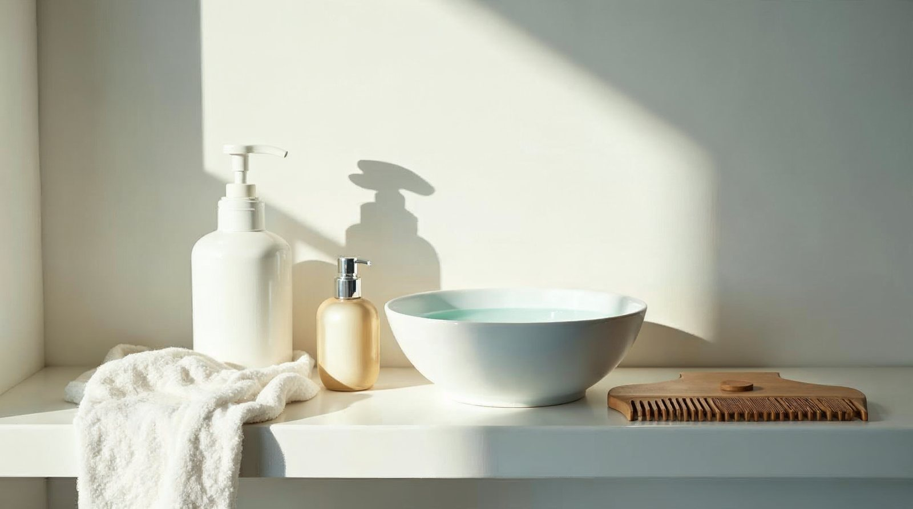
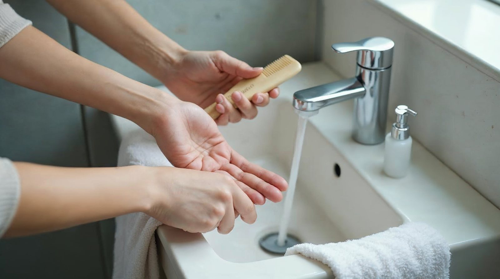
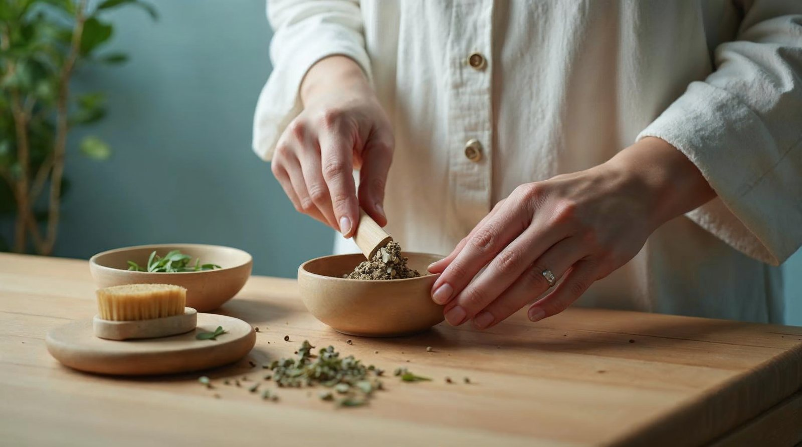
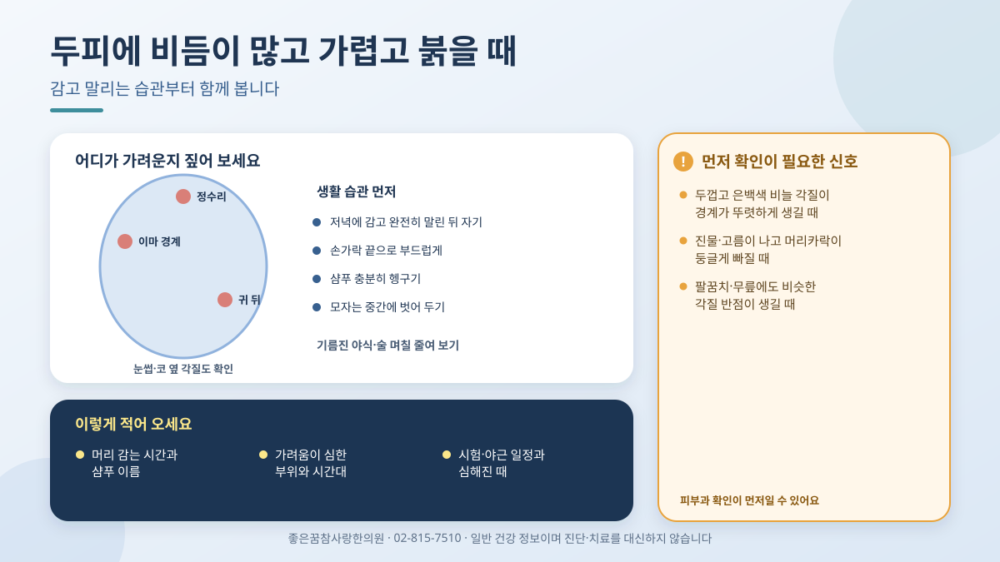

이종호 한의사 감수좋은꿈참사랑한의원 대표원장 (한의사 면허번호 19769)발행 2026-11-23 · 수정 2026-11-26
이 글의 차례
- 왜 이런 불편이 생길 수 있나요
- 비슷해 보이는 두피 증상과는 어떻게 구분하나요?
- 먼저 이렇게 여쭙니다
- 일상에서 먼저 해 볼 수 있는 것
- 머리는 이렇게 감고 말려 보세요
- 상황별 예시
- 스스로 점검해 보세요
- 한의학에서는 두피 각질을 어떻게 바라보나요?
- 자주 하는 오해는 무엇인가요?
- 먹고 자는 습관은 어떻게 바꿔 볼까요?
- 가족에게 옮지는 않나요?
- 계절이 바뀌면 무엇을 다르게 하나요?
- 모자와 헬멧은 어떻게 관리할까요?
- 한의원에서 함께 살필 수 있는 경우
- 첫 진료는 어떤 순서로 진행되나요?
- 다시 오셨을 때는 무엇을 비교하나요?
- 얼마나 지켜보고 언제 상담할까요
- 이렇게 기록해 오시면 상담이 쉬워집니다
- 이런 증상은 먼저 확인이 필요합니다
- 함께 읽으면 좋은 글
두피에 비듬이 많고 가렵고 붉다면 머리를 감고 말리는 습관, 잠과 스트레스, 기름과 땀이 많은 두피 상태가 함께 작용하는 경우가 많아, 생활 습관을 먼저 점검하는 것이 출발점입니다.
공부나 야근으로 밤늦게 머리를 감고 덜 말린 채 바로 자는 생활이 이어지는 분들께서 자주 이야기하십니다. 검은 옷 어깨에 하얀 가루가 떨어질 때마다 신경이 쓰여 사람 만나는 일이 부담스러워졌다는 말씀도 듣습니다.
왜 이런 불편이 생길 수 있나요
- 두피는 피지선이 많아 기름과 각질이 쉽게 쌓이고, 피부에 사는 곰팡이균이 늘면 가려움과 각질이 심해질 수 있습니다.
- 밤늦게 감고 덜 말린 채 자면 두피가 습한 상태로 오래 머뭅니다.
- 잠이 부족하고 긴장이 많은 시기에 심해진다는 분이 많습니다.
- 한의학에서는 얼굴로 열이 오르는 경향과 땀, 소화 상태도 함께 살핍니다.
- 샴푸가 두피에 남거나 손톱으로 세게 긁으며 감으면 두피가 자극받아 붉어지기 쉽습니다.
- 계절이 바뀌는 때나 겨울 난방으로 실내가 건조할 때 각질이 늘었다는 분도 있습니다.
두피에는 원래 기름을 좋아하는 작은 곰팡이균이 함께 살고 있습니다. 평소에는 조용히 지내다가 기름이 많아지고 두피가 습하게 오래 머물면 그 수가 늘면서 두피를 자극하는 경우가 있습니다.
그래서 비듬과 가려움은 깨끗하지 않아서라기보다, 기름과 습기, 긴장과 잠의 리듬이 겹쳐 두피의 균형이 흔들린 신호로 보는 편이 맞습니다.
비슷해 보이는 두피 증상과는 어떻게 구분하나요?
- 작고 마른 하얀 가루가 날리고 붉은 기는 거의 없다면 건조한 두피에서 오는 비듬인 경우가 많습니다.
- 노랗고 기름진 각질이 두피에 붙어 있고 이마 경계와 귀 뒤, 눈썹과 코 옆까지 붉다면 지루성 피부염 쪽으로 살펴봅니다.
- 염색이나 새 샴푸를 쓴 뒤 두피가 붉게 붓고 따갑다면 닿은 제품에 대한 반응일 수 있습니다.
- 털구멍마다 붉고 아픈 뾰루지가 생긴다면 두피 모낭염과 구분이 필요합니다.

먼저 이렇게 여쭙니다
- 머리는 하루 중 언제 감고, 말리고 주무시나요?
- 가려움이 심한 곳이 정수리, 이마 경계, 귀 뒤 가운데 어디인가요?
- 눈썹이나 코 옆에도 각질이 생기나요?
- 잠이 부족하거나 스트레스가 많을 때 더 심한가요?
- 샴푸와 트리트먼트는 어떤 제품을, 얼마나 쓰시나요?
- 모자나 헬멧을 하루에 몇 시간 정도 쓰시나요?
- 기름진 음식이나 술, 단 음식을 자주 드시는 편인가요?

일상에서 먼저 해 볼 수 있는 것
- 저녁에 머리를 감고 두피까지 완전히 말린 뒤 자기
- 손톱 대신 손가락 끝으로 두피를 부드럽게 감기
- 샴푸를 충분히 헹궈 두피에 남지 않게 하기
- 모자를 오래 쓰는 날은 중간에 벗어 두피가 숨 쉴 시간 주기
- 기름진 야식과 술을 며칠 줄여 보고 두피 변화 살피기
머리는 이렇게 감고 말려 보세요
머리 감는 순서를 바꿔 보면 두피가 받는 자극을 줄여 볼 수 있습니다. 아래 순서를 2주 정도 이어 가며 가려움을 적어 보세요.
- 감기 전에 마른 머리를 가볍게 빗어 엉킨 머리와 큰 각질을 털어 내기
- 미지근한 물로 1분 정도 두피까지 충분히 적시기
- 샴푸는 손바닥에서 거품을 낸 뒤 두피에 얹고, 손가락 끝으로 부드럽게 문지르기
- 거품이 두피에 남지 않도록 감은 시간보다 조금 더 오래 헹구기
- 수건으로 비비지 말고 눌러서 물기를 닦기
- 드라이어는 미지근하거나 시원한 바람으로, 머리끝보다 두피부터 말리기
트리트먼트나 린스는 두피보다 머리카락 끝 쪽에만 바르고 깨끗이 헹궈 주세요. 비듬 샴푸를 쓴다면 설명서의 사용 횟수와 거품을 두는 시간을 지키는 것이 좋습니다.
상황별 예시
- 예를 들어 독서실에서 밤늦게 돌아와 머리를 감고 덜 말린 채 바로 잠드는 수험생이라면, 머리 감는 시간을 저녁 식사 뒤로 옮기거나 잠들기 전 드라이어로 두피까지 말리는 것부터 바꿔 볼 수 있습니다.
- 예를 들어 오토바이 배달 일로 하루 종일 헬멧을 쓰는 경우라면, 헬멧 안쪽 패드를 자주 빨고 쉬는 시간에 헬멧을 벗어 두피를 말리는 습관을 함께 정합니다.
- 예를 들어 마감 주마다 야근과 야식, 잠 부족이 겹친 뒤 가려움이 심해지는 직장인이라면, 일정과 가려움을 함께 적어 두피 상태가 생활 리듬을 따라 오르내리는지 봅니다.
- 예를 들어 염색이나 파마를 한 뒤부터 두피가 붉고 가렵다는 경우라면, 시술한 날짜와 제품을 적어 두고 다음 시술은 두피가 가라앉은 뒤로 미루며 변화를 지켜볼 수 있습니다.
- 예를 들어 땀을 많이 흘리는 운동을 하고 머리를 바로 감지 못한 채 몇 시간 지내는 경우라면, 운동 뒤 물로라도 두피를 헹구고 말리는 습관을 함께 정합니다.
스스로 점검해 보세요
- 머리를 감고 두피가 덜 마른 채 잠드는 날이 일주일에 사흘 이상인가요?
- 샴푸할 때 손톱으로 세게 긁으시나요?
- 눈썹이나 코 옆, 귀 뒤에도 붉은 각질이 있나요?
- 잠이 부족하거나 긴장이 많은 주에 가려움이 심해지나요?
- 모자나 헬멧을 하루 네 시간 넘게 쓰시나요?
- 새로 바꾼 샴푸나 염색 뒤에 시작되었나요?
해당하는 항목이 많다면 머리 감고 말리는 습관부터 바꿔 보세요. 얼굴에도 각질이 있다면 사진을 함께 남겨 두시면 살피기 쉽습니다.
한의학에서는 두피 각질을 어떻게 바라보나요?
한의학에서는 두피의 기름과 붉은 기를 열이 위로 몰리는 경향과 함께 보고, 땀이 많고 얼굴이 쉽게 붉어지는지, 기름진 음식을 즐기는지, 소화가 더부룩한지를 함께 살핍니다. 반대로 각질이 마르고 가늘게 날린다면 몸이 건조한 쪽인지를 봅니다.
또 잠이 부족하고 긴장이 이어지면 머리 쪽으로 열이 오르기 쉽다고 보아, 두피가 심해진 시기의 잠과 일정을 꼭 함께 여쭙니다. 이렇게 몸의 경향을 함께 보면 머리 감는 습관 외에도 바꿔 볼 생활이 보이기도 합니다.
자주 하는 오해는 무엇인가요?
- 뜨거운 물로 감아야 기름이 잘 빠진다는 생각: 뜨거운 물은 두피를 자극해 붉은 기와 가려움을 늘릴 수 있어 미지근한 물을 권합니다.
- 자연 바람으로 말려야 두피에 좋다는 생각: 덜 마른 채 오래 두면 두피가 습하게 머물러, 시원한 바람으로 두피부터 말리는 편이 좋습니다.
먹고 자는 습관은 어떻게 바꿔 볼까요?
두피는 생활 리듬을 생각보다 정직하게 따라갑니다. 기름진 야식과 술, 단 음료가 이어진 주에 가려움이 늘었다는 분이 많습니다.
- 야식은 주 2회 안쪽으로 줄이고, 잠들기 3시간 전에는 먹지 않기
- 튀김과 기름진 음식은 채소와 함께 먹고, 단 음료 대신 물이나 보리차 마시기
- 자정 전에 잠드는 날을 일주일에 사흘 이상 만들기
한꺼번에 바꾸기 어렵다면 하나만 골라 2주 이어 가고, 가려움 기록을 비교해 보세요.
가족에게 옮지는 않나요?
두피 각질과 가려움은 피부의 상태와 생활 리듬에서 오는 경우가 많아, 가족에게 옮는 것으로 보지는 않습니다. 다만 빗과 수건, 베갯잇은 각자 쓰고 자주 빨아 두면 두피를 깨끗하게 지키는 데 도움이 됩니다.
아이 두피에 동그랗게 각질이 생기고 머리카락이 끊어진다면 곰팡이균 같은 다른 원인일 수 있어 피부과 확인을 권합니다.
계절이 바뀌면 무엇을 다르게 하나요?
여름에는 땀과 기름이 늘어 두피가 쉽게 습해지고, 겨울에는 실내가 건조해 각질이 가늘게 날리는 경우가 많습니다. 계절에 따라 같은 습관이 맞지 않을 수 있습니다.
- 여름: 땀을 많이 흘린 날은 그날 감고, 두피까지 시원한 바람으로 바짝 말리기
- 겨울: 너무 뜨거운 물을 피하고, 실내 습도를 40~60%로 맞추기
- 환절기: 가려움이 늘면 새 제품을 여러 개 바꾸기보다 하나만 바꾸고 2주 지켜보기
모자와 헬멧은 어떻게 관리할까요?
모자와 헬멧은 두피를 덮어 땀과 열이 빠져나가지 못하게 합니다. 오래 써야 하는 일이라면 안쪽 땀받이를 자주 빨거나 바꿔 주세요.
모자는 두세 개를 번갈아 쓰면 안쪽이 마를 시간이 생깁니다. 젖은 머리에 바로 모자를 쓰는 것은 피해 주세요.
헬멧 안쪽 패드를 떼어 빨 수 있다면 일주일에 한 번은 빨고, 그늘에서 바짝 말린 뒤 다시 끼워 주세요. 땀받이용 얇은 두건을 헬멧 안에 쓰고 매일 바꾸는 방법도 있습니다.

한의원에서 함께 살필 수 있는 경우
- 두피 각질과 가려움이 오래 반복되는 경우 생활 리듬과 함께 두피 상태를 살핍니다.
- 얼굴에 열이 잘 오르거나 땀이 많은 편인지 몸의 경향을 함께 살핍니다.
- 잠과 스트레스가 겹쳐 심해지는 경우 마음과 몸의 긴장을 함께 여쭙니다.
- 피부과 진료를 받고 있으면서 잠·소화·긴장 같은 몸의 흐름도 함께 살피고 싶은 경우입니다.
좋은꿈참사랑한의원에서는 두피만이 아니라 머리 감는 습관과 하루 리듬, 얼굴로 오르는 열과 땀, 소화를 함께 살핀 뒤 침이나 한약 상담 등 상태에 맞는 방법을 정합니다.
쓰고 있는 샴푸나 두피 약, 먹는 약이 있다면 이름을 알려 주시고, 처방받은 약은 처방한 의사와 상의 없이 끊지 마세요. 한약을 상담할 때는 지금 드시는 약을 먼저 확인하고, 임신 중이라면 먼저 말씀해 주시고 산부인과와도 상의해 주세요.
첫 진료는 어떤 순서로 진행되나요?
- 모든 분의 맥을 먼저 짚고, 가려움과 각질이 시작된 시기와 심해지는 때를 듣습니다.
- 가르마를 나눠 정수리, 이마 경계, 귀 뒤의 각질과 붉은 자리를 살펴보고, 눈썹과 코 옆, 가슴 가운데처럼 기름이 많은 곳도 봅니다.
- 머리 감는 시각과 순서, 말리는 방법, 쓰는 샴푸를 자세히 여쭙고, 필요하다고 판단되면 혀의 모습도 살핍니다.
- 잠, 식사, 땀, 긴장을 여쭌 뒤 상태에 맞는 방법과 집에서 바꿀 습관을 정합니다.
다시 오셨을 때는 무엇을 비교하나요?
두 번째 진료부터는 다시 맥을 짚고, 찍어 오신 같은 자리 두피 사진을 나란히 놓고 각질의 양과 붉은 기를 함께 봅니다. 바꾼 머리 감는 습관을 얼마나 지킬 수 있었는지, 가려움으로 잠을 깬 날은 없었는지도 여쭙니다.
시험이나 야근이 몰린 주에 다시 심해졌다면, 그 주에 미리 할 수 있는 것을 함께 정해 둡니다.
얼마나 지켜보고 언제 상담할까요
- 머리 감고 말리는 습관을 바꾼 뒤 2~3주 정도는 가려움과 각질의 양을 적으며 지켜볼 수 있습니다.
- 그사이에도 가려움 때문에 잠을 설치거나, 붉은 자리가 얼굴과 목으로 넓어지면 상담을 받아 보시기를 권합니다.
이렇게 기록해 오시면 상담이 쉬워집니다
- 머리 감는 시간과 쓰는 샴푸 이름
- 가려움이 심한 부위와 시간대
- 시험이나 야근 일정과 심해진 때의 관계
- 얼굴(눈썹, 코 옆)에도 각질이 있다면 사진
두피 사진은 가르마를 타서 밝은 곳에서 찍으면 각질과 붉은 기가 잘 보입니다. 같은 자리를 일주일에 한 번 찍어 두면 변화를 비교하기 쉽습니다.
두피 가려움은 별것 아닌 듯 보여도 하루 종일 신경이 쓰이는 일입니다. 다음에 오시면 가려움 때문에 가장 힘드셨던 날의 하루부터 여쭙겠습니다.
이런 증상은 먼저 확인이 필요합니다
- 두피에 두껍고 은백색 비늘 같은 각질이 경계가 뚜렷하게 생기는 경우
- 진물이나 고름이 나거나 머리카락이 둥글게 빠지는 경우
이런 신호가 있으면 한의원보다 가까운 병원이나 응급실을 먼저 찾으세요.
함께 읽으면 좋은 글
- 두피가 금방 기름지고 가려울 때, 지루성 두피염까지 어떻게 살피나요?
- 두피에 뾰루지와 여드름이 자꾸 올라올 때는 무엇을 나눠 살피고, 생활에서는 어떻게 하나요?
- 팔꿈치·무릎·두피에 은백색 각질이 쌓이는 건선은 어떻게 살피나요?

여쭙는 것
- 머리는 하루 중 언제 감고, 말리고 주무시나요?
- 가려움이 심한 곳이 정수리, 이마 경계, 귀 뒤 가운데 어디인가요?
- 눈썹이나 코 옆에도 각질이 생기나요?
생활에서 해 볼 것
- 저녁에 머리를 감고 두피까지 완전히 말린 뒤 자기
- 손톱 대신 손가락 끝으로 두피를 부드럽게 감기
- 샴푸를 충분히 헹궈 두피에 남지 않게 하기
한의원에서 함께 살필 것
- 두피 각질과 가려움이 오래 반복되는 경우 생활 리듬과 함께 두피 상태를 살핍니다.
- 얼굴에 열이 잘 오르거나 땀이 많은 편인지 몸의 경향을 함께 살핍니다.
- 잠과 스트레스가 겹쳐 심해지는 경우 마음과 몸의 긴장을 함께 여쭙니다.
먼저 확인이 필요한 신호
- 두피에 두껍고 은백색 비늘 같은 각질이 경계가 뚜렷하게 생기는 경우
- 진물이나 고름이 나거나 머리카락이 둥글게 빠지는 경우
한눈에 보는 표
| 구분 | 핵심 |
|---|---|
| 여쭙는 것 | 머리는 하루 중 언제 감고, 말리고 주무시나요? 가려움이 심한 곳이 정수리, 이마 경계, 귀 뒤 가운데 어디인가요? |
| 생활에서 해 볼 것 | 저녁에 머리를 감고 두피까지 완전히 말린 뒤 자기 손톱 대신 손가락 끝으로 두피를 부드럽게 감기 |
| 한의원에서 함께 살필 것 | 두피 각질과 가려움이 오래 반복되는 경우 생활 리듬과 함께 두피 상태를 살핍니다. 얼굴에 열이 잘 오르거나 땀이 많은 편인지 몸의 경향을 함께 살핍니다. |
| 먼저 확인이 필요한 신호 | 두피에 두껍고 은백색 비늘 같은 각질이 경계가 뚜렷하게 생기는 경우 진물이나 고름이 나거나 머리카락이 둥글게 빠지는 경우 |
자주 묻는 질문
비듬 샴푸를 매일 써도 되나요?
제품마다 권하는 횟수가 다르니 설명서를 따르고, 따갑거나 더 건조해지면 쓰는 간격을 늘리는 것이 좋습니다.
머리를 매일 감으면 더 건조해지지 않나요?
두피가 기름진 편이라면 매일 감는 것이 나을 수 있습니다. 감는 횟수보다 잘 헹구고 잘 말리는 것이 중요합니다.
두피에 오일을 발라도 되나요?
기름진 두피에는 오일이 각질을 늘릴 수 있어 권하지 않습니다. 바르고 있는 것이 있다면 알려 주세요.
탈모로 이어지나요?
가려움과 각질만으로 단정할 수는 없습니다. 머리카락이 눈에 띄게 많이 빠지면 함께 살피고 필요하면 다른 의료기관을 안내합니다.
아침에 감는 것과 저녁에 감는 것 중 어느 쪽이 좋나요?
하루 동안 쌓인 기름과 먼지를 씻어 내고 잘 말린 뒤 잘 수 있다면 저녁이 편한 경우가 많습니다. 다만 덜 말린 채 잔다면 아침에 감는 편이 나을 수 있습니다.
좋은꿈참사랑한의원은 재진 때 지난번 이야기부터 이어서 여쭙니다. 진료시간과 예약은 오시는 길에서 확인하세요.
어디서 상담받을 수 있나요?
좋은꿈참사랑한의원은 서울 동작구 만양로2길 2 신성빌딩 3층·5층(서울 동작구 상도동, 7호선 상도역 3번 출구 근처)에 있습니다. 한의사 3명(이종호 대표원장, 조영기 수석진료원장, 정원영 진료원장)이 진료합니다. 진료시간은 평일 09:30~20:00(점심 13:00~14:00), 토·일·공휴일 09:30~15:00이며, 방문 전 전화로 확인을 권합니다. 예약은 네이버 예약, 카카오톡 상담, 전화 02-815-7510로 받습니다.
이 글은 일반적인 건강 정보이며 개인의 진단이나 치료를 대신하지 않습니다. 증상이 있거나 복용 중인 약이 있다면 진료를 통해 확인하세요. 치료 효과는 개인마다 다를 수 있습니다.
작성 기준: 일반적으로 알려져 있는 건강 정보를 참고해 정리했습니다(대표원장 감수). 증상 기록은 1~2주 동안 하루 1회, 비슷한 시간에 적어 오시면 지난 상태와 비교하기 쉽습니다.